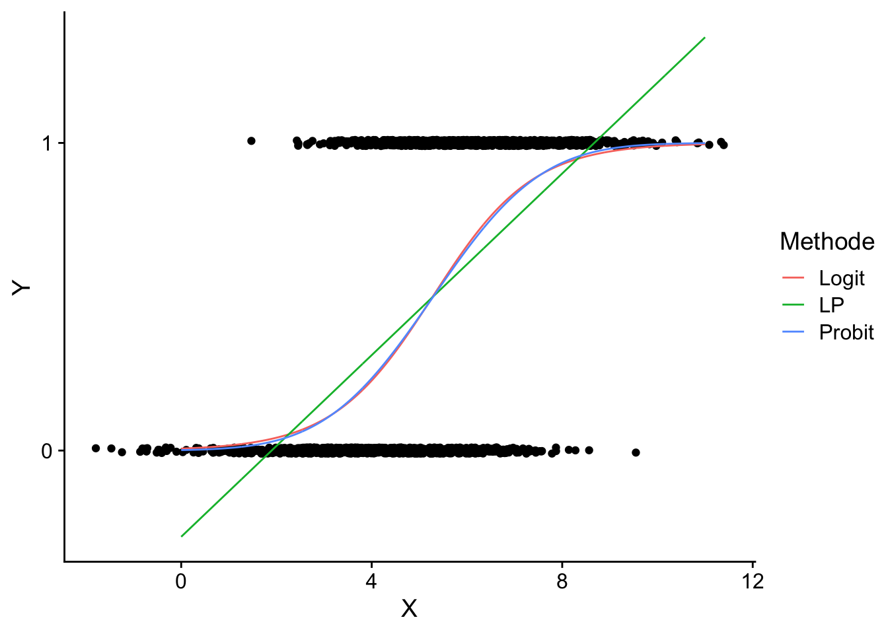
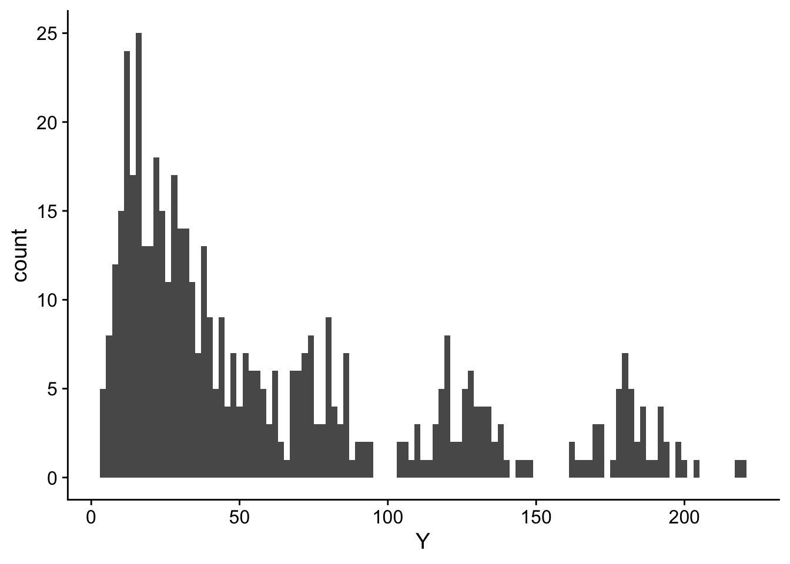

3 Regression
Eine Vielzahl der in diesem Companion behandelten Methoden basiert auf dem Konzept der Schätzung kausaler Effekte mit Regression. Als Regressionsansatz bezeichnet man eine Methode, welche die Beziehungen zwischen Variablen durch einen funktionalen Zusammenhang beschreibt und die Parameter der gewählten funktionalen Form anhand von beobachteten Daten schätzt. Lineare Regression nimmt eine lineare funktionale Form der Beziehung zwischen einer abhängigen Variable (Outcome-Varibale) und erklärenden Variablen (Regressoren) an. Nicht-lineare Regressionsmethoden modellieren die Beziehung etwa durch Polynome höherer Ordnung, exponentielle Funktionen oder andere komplexere Formen. Die Wahl der funktionalen Form hängt von der Natur des datenerzeugenden Prozesses (DGP) und somit stets von der spezifischen Beziehung ab, die untersucht wird.
Regressionsansätze gehören zu den am häufigsten verwendeten Methoden für Kausalanalysen, da so in vielen Forschungsdesigns kausale Effekte identifiziert werden können, indem Backdoors geschlossen werden: Regression kann die durch die Behandlungsvariable verursachte Variation in der Outcome-Variable isolieren, indem für gemeinsame Einflussfaktoren von Behandlungs- und Outcome-Variable kontrolliert wird. In diesem Kapitel erläutern wir Grundlagen der Spezifikation und Schätzung von Regressionsansätzen, die für spätere Kapitel relevant sind. Neben einer Motivation für multiple Regression betrachten wir Modelle für verschiedene Typen von Outcome-Variablen und diskutieren deren Implementierung mit R.
3.1 Regression schließt Backdoors: Frish-Waugh-Lovell-Theorem
Das Frisch-Waugh-Lovell-Theorem (FWL) besagt, dass in einer multiplen linearen Regression die geschätzten Koeffizienten für eine Teilmenge der Regressoren numerisch identisch zu Koeffizientenschätzungen aus folgenden Schritten sind
Rechne die Effekte der übrigen Variablen auf (a) die Outcome-Variable und (b) die Teilmenge der erklärenden Variablen mit Regression heraus und
regressiere anschließend die Residuen von Schritt (a) auf Schritt (b).
In einem multiplen Modell mit zwei Regressoren \(X_1,\ X_2\), \[\begin{align} Y = \beta_0 + \beta_1 X + \beta_2 X_2 + \epsilon \label{eq:fwlfullreg} \end{align}\] kann der Effekt von \(X_1\) auf \(Y\) also mit der Regression \[\begin{align*} \widehat{u}_{Y,X_2} = \beta_1 \widehat{u}_{X_1,X_2} + e \label{eq:fwl2reg} \end{align*}\] geschätzt werden, wobei \(\widehat{u}_{Y,X_2}\) und \(\widehat{u}_{X_1,X_2}\) die Residuen der Regression von \(Y\) auf \(X_2\) und von \(X_1\) auf \(X_2\) sind.
FWL ermöglicht daher eine Vereinfachung der Schätzung komplexer Modelle durch die Zerlegung der Schätzung in Teilschritte.
Für das Verständnis der Schätzung kausaler Effekte mit linearer Regression ist FWL hilfreich, denn es zeigt, wie sowohl die Variation in der Outcome-Variable (\(\widehat{u}_{Y,X_2}\)) als auch die Variation in der Behandlungsvariable (\(\widehat{u}_{X_1,X_2}\)), die jeweils nicht durch Kovariablen (\(X_2\)) verursacht wird, mit multipler Regression isoliert werden kann, sodass Backdoors geschlossen werden.
Wir illustrieren dieses Konzept anhand einer multiplen Regression für die Schnabeltiefe (body_mass) von Pinguinen aus dem Datensatz palmerpenguins::penguins,
\[\begin{align} \textup{body\_mass} = \beta_0 + \beta_1\cdot\textup{bill\_length} + \beta_2\cdot \textup{flipper\_length} + \epsilon,\label{eq:billdepthmodel} \end{align}\] unter der Annahme, dass \(\beta_1\) der interessierende Effekt ist: Die erwartete Änderung des Gewichts eines Pinguins (in Gramm) für eine Änderung der Schnabel-Länge um 1mm.
Vor der Schätzung von Modell \(\eqref{eq:billdepthmodel}\) lesen wir den Datensatz ein und erstellen eine bereinigte Variante penguins_cleaned, analog zur Vorgehensweise in ?sec-pp.
Wir schätzen nun Modell \(\eqref{eq:billdepthmodel}\) mit lm() und erhalten eine Zusammenfassung der geschätzen Koeffizienten mit broom::tidy().
Das Ergebnis der Schätzung ist \(\widehat{\beta}_1\approx3.80\). Der nächste Code-Block berechnet die Residuen aus den Regressionen \[\begin{align*} \textup{body\_mass} =&\, \alpha_0 + \alpha_1 \textup{flipper\_length} + u_{\textup{body\_mass},\,\textup{flipper\_length}},\\ \textup{bill\_length} =&\, \delta_0 + \delta_1 \textup{flipper\_length} + u_{\textup{bill\_length},\,\textup{flipper\_length}}, \end{align*}\]
und speichert diese in body_mass_res und bill_length_res.
Der geschätzte Koeffizient aus der Regression der Residuen stimmt mit dem geschätzten Koeffizienten von bill_length aus der großen Regression \(\eqref{eq:billdepthmodel}\) überein.
Wir können den Effekt der Kontrolle für flipper_length visualisieren. Wir plotten hierzu:
Die originalen Datenpunkte für
bill_lengthundbody_mass1 gemeinsam mit der geschätzten Regressionslinie für das Modell \[ \textup{body\_mass} = \beta_0 + \beta_1\textup{bill\_length} + u \] (keine Kontrolle fürflipper_length!)2.Die um
flipper_lengthbereinigten Datenpunkte und die zugehörige geschätzte Regressionslinie.
1 Für eine bessere Lesbarkeit der Grafik zentrieren wir beide Variablen um den jeweiligen Stichprobenmittelwert.
2 Der R-Befehl für diese Regression ist lm(I(body_mass - mean(body_mass)) ~ I(bill_length - mean(bill_length)) - 1, data = penguins_cleaned).
Der grafische Vergleich beider Vorgehensweisen zeigt den Effekt der Kontrolle für flipper_length: Die geschätzte (schwarze) Regressionslinie für die bereinigten Daten hat eine deutlich geringere Steigung als die anhand der ursprünglichen Daten geschätzte (lilane) Linie. Der Effekt von bill_length auf body_mass wird mit der einfachen Regression lm(body_mass ~ bill_length) vermutlich überschätzt, weil es andere Faktoren (wie flipper_length gibt, die mit bill_length und body_mass korrelieren. Kontrollieren für flipper_length in der multiplen Regression lm(body_mass ~ bill_length + flipper_length) schließt die Backdoor durch flipper_length. Die Konsequenz ist eine deutlich geringere Steigung der lilanen Regressionslinie.
3.2 Binäre Outcome-Variable
3.2.1 Das lineare Wahrscheinlichkeitsmodell
Das lineare Regressionsmodell
\[Y_i = \beta_0 + \beta_1 X_{1i} + \beta_2 X_{2i} + \dots + \beta_k X_{ki} + u_i\]
mit einer binären abhängigen Variablen \(Y_i\in\{0,1\}\) wird als lineares Wahrscheinlichkeitsmodell bezeichnet. Wie üblich modellieren wir den Erwartungswert der abhängigen Variable gegeben der Regressoren \(X_1,\dots,X_k\) als lineare Funktion,
\[E(Y\vert X_1,X_2,\dots,X_k) = P(Y=1\vert X_1, X_2,\dots, X_3).\] Da \(Y\) eine binäre Variable ist, gilt hier
\[ P(Y = 1 \vert X_1, X_2, \dots, X_k) = \beta_0 + \beta_1 X_1 + \beta_2 X_2 + \dots + \beta_k X_k.\]
Das lineare Wahrscheinlichkeitsmodell beschreibt also die Wahrscheinlichkeit, dass \(Y=1\) als lineare Funktion der Regressoren: \(\beta_j\) misst die Änderung in der Wahrscheinlichkeit das \(Y_i=1\), unter der Bedingung, dass die anderen \(k-1\) Regressoren konstant gehalten werden. Genau wie in der gewöhnlichen multiplen Regression können die \(\beta_j\) mit der KQ-Methode geschätzt werden.
Aufgrund der Beschränktheit der \(Y_i\) auf \(\{0,1\}\) sind die \(u_i\) heteroskedastisch. Folglich sollten Inferenzstatistiken mit robusten Standardfehlern berechnet werden. Weiterhin ist zu beachten, dass \(R^2\) in den meisten Anwendungen von linearen Wahrscheinlichkeitsmodellen keine hilfreiche Interpretation hat, da das geschätzte Modell die Daten nicht perfekt erklären kann, wenn die abhängige Variable binär, aber die Regressoren kontinuierlich verteilt sind.
Das lineare Wahrscheinlichkeitsmodell hat einen wesentlichen Nachteil: Wir nehmen an, dass die bedingte Wahrscheinlichkeitsfunktion linear ist. Daher ist \(P(Y=1\vert X_1,\dots,X_k)\) nicht auf das für Wahrscheinlichkeiten definierte Intervall \([0,1]\) beschränkt, sodass das angepasste Modell für extreme Regressorwerte keine sinnvolle Interpretation haben kann.
Diese Gegebenheit verlangt nach einem Ansatz, der eine nicht-lineare Funktion verwendet, um die bedingte Wahrscheinlichkeitsfunktion einer binären abhängigen Variable zu modellieren. Häufig verwendete Methoden sind Probit- und Logit-Regression.
3.2.2 Probit-Regression
Bei der Probit-Regression wird die Standardnormalverteilungsfunktion \(\Phi(\cdot)\) verwendet, um die Regressionsfunktion bei einer binären abhängigen Variable zu modellieren. Wir nehmen an, dass \[\begin{align} E(Y\vert X) = P(Y=1\vert X) = \Phi(\beta_0 + \beta_1 X). \label{eq:probitmodel} \end{align}\]
\(\beta_0 + \beta_1 X\) in \(\eqref{eq:probitmodel}\) ist hier ein Quantil \(z\) der Standardnormalverteilung, \[\begin{align} \Phi(z) = P(Z \leq z) \ , \ Z \sim \mathcal{N}(0,1), \end{align}\] sodass der Koeffizient \(\beta_1\) in \(\eqref{eq:probitmodel}\) die Änderung in \(z\) misst, die mit einer Änderung von einer Einheit in \(X\) verbunden ist. Obwohl der Effekt einer Änderung in \(X\) auf \(z\) linear ist, ist der Zusammenhang zwischen \(z\) und der abhängigen Variable \(Y\) nicht linear: \(\Phi\) ist eine nicht-lineare Funktion von \(X\) (vgl. Abbildung 3.1)!
# N(0,1)-Verteilungsfunktion
ggplot() +
geom_function(fun = pnorm) +
scale_x_continuous(
name = "z",
limits = c(-4, 4)
) +
scale_y_continuous(name = "P(Z<z)") +
theme_cowplot()Da die abhängige Variable eine nichtlineare Funktion der Regressoren ist, hat der Koeffizient von \(X\) keine einfache Interpretation. Die Änderung in der Wahrscheinlichkeit, dass \(Y=1\) ist, durch eine Änderung in \(X\) (partieller Effekt) kann berechnet werden als:
\[\begin{align} \frac{\partial\textup{E}(Y\vert X)}{\partial X} = \frac{\partial\textup{P}(Y=1\vert X)}{\partial X} = \frac{\partial\Phi(\beta_0 + \beta_1 X)}{\partial X} = \phi(\beta_0 + \beta_1 X) \beta_1, \end{align}\] wobei \(\phi(\cdot)\) die Dichtefunktion der Standardnormalverteilung ist. In empirischen Anwendungen wird der partielle Effekt häufig als Differenz in geschätzten Wahrscheinlichkeiten angegeben:
- Berechne die geschätzte Wahrscheinlichkeit, dass \(Y=1\) für einen Bezugswert \(X\).
- Berechne die geschätzte Wahrscheinlichkeit, dass \(Y=1\) für \(X + \Delta X\).
- Berechne die Differenz zwischen der geschätzten Wahrscheinlichkeiten.
Wie im linearen Wahrscheinlichkeitsmodell kann das Modell \(\eqref{eq:probitmodel}\) auf eine Probit-Regression mit mehreren Regressoren \(X_j\), \(j=1,\dots,k\) verallgemeinert werden, um das Risiko einer Verzerrung durch ausgelassene Variablen zu mindern. Die Schritte 1 bis 3 für die Berechnung des partiellen Effekts einer Änderung in \(X_j\) erfolgen dann unter der Annahme, dass die übrigen \(k-1\) Regressoren konstant gehalten werden, wobei der partielle Effekt von den jeweiligen Regressorwerten abhängt.
3.2.3 Logistische Regression
3.2.4 Schätzung mit R
# lineares Wahrscheinlichkeitsmodell schätzen
mod_lp <- lm(formula = Y ~ X, data = simdata)# geschätztes lineares Modell plotten
simdata %>%
ggplot(mapping = aes(x = X, y = Y)) +
geom_point(
position = position_jitter(
height = .025,
seed = 1234
),
alpha = .25,
color = "blue"
) +
geom_line(
data = pred,
mapping = aes(y = LP),
lwd = .75
) +
theme_cowplot()# Vergleich mit linearem Modell
simdata %>%
ggplot(mapping = aes(x = X, y = Y) ) +
geom_point(
position = position_jitter(
height = .01,
seed = 1234
)
) +
geom_line(
data = pred,
mapping = aes(y = Wsk, color = Methode)
) +
scale_y_continuous(breaks = c(0, 1)) +
theme_cowplot()
3.3 Modellierung von Zählvariablen mit Poisson-Regression
Die Poisson-Regression ist ein statistisches Modell, das verwendet wird, um Zählvariablen (d.h. Variablen, die diskrete, nicht-negative Werte annehmen) zu modellieren, insbesondere wenn die Zählwerte eine Poisson-Verteilung aufweisen. Dieses Modell wird häufig in Fällen verwendet, in denen die abhängige Variable die Anzahl der Ereignisse in einem bestimmten Zeitraum oder Raum beschreibt, wie z.B. die Anzahl der Verkehrsunfälle in einer Stadt innerhalb eines Monats.
3.3.1 Poisson-Verteilung
Eine Zufallsvariable \(Y\) folgt einer Poisson-Verteilung mit Parameter \(\lambda\), wenn ihre Wahrscheinlichkeitsverteilung gegeben ist durch:
\[\begin{align} P(Y = y) = \frac{\lambda^y e^{-\lambda}}{y!} \quad \text{für} \quad y = 0, 1, 2, \ldots \end{align}\]
Hierbei ist \(\lambda\) sowohl der Mittelwert als auch die Varianz der Verteilung (\(\mathbb{E}[Y] = \text{Var}(Y) = \lambda\)).
ggplot(
data = dat,
mapping = aes(x = Y)
) +
geom_histogram(
mapping = aes(y = after_stat(density)),
binwidth = 1,
color = "white"
) +
geom_line(
data = tibble(
X = 0:13,
Y = dpois(x = X, lambda = 5)
),
mapping = aes(x = X, y = Y),
color = "red"
) +
theme_cowplot()
3.3.2 Der Regressionsansatz
In der Poisson-Regression modellieren wir den Erwartungswert der abhängigen Variable \(Y\) als eine Funktion der unabhängigen Variablen \(\mathbf{X} = (X_1, X_2, \ldots, X_k)\). Der Erwartungswert von \(Y\) wird durch den Parameter \(\lambda\) repräsentiert, der wiederum eine Funktion der unabhängigen Variablen ist. Die Beziehung wird typischerweise durch eine logarithmische Verknüpfungsfunktion beschrieben:
\[\begin{align} \log(\lambda_i) = \mathbf{X}_i^\top \boldsymbol{\beta} \end{align}\]
Dies kann auch als
\[\begin{align} \lambda_i = \exp(\mathbf{X}_i^\top \boldsymbol{\beta}) \end{align}\]
geschrieben werden, wobei:
\(\lambda_i\) der Erwartungswert von \(Y\) für Beobachtung \(i\),
\(\mathbf{X}_i\) der Vektor der unabhängigen Variablen für Beobachtung \(i\) und
\(\boldsymbol{\beta}\) der Vektor der Regressionskoeffizienten ist.
3.3.3 Modellanpassung
Die Parameter \(\boldsymbol{\beta}\) werden durch Maximum-Likelihood-Schätzung (MLE) geschätzt. Die Likelihood-Funktion für \(n\) Beobachtungen ist gegeben durch
\[\begin{align} L(\boldsymbol{\beta}) = \prod_{i=1}^n \frac{\lambda_i^{y_i} e^{-\lambda_i}}{y_i!}. \end{align}\]
Die Log-Likelihood-Funktion ist daher
\[\begin{align} \mathcal{L}(\boldsymbol{\beta}) = \sum_{i=1}^n \left( y_i \log(\lambda_i) - \lambda_i - \log(y_i!). \right) \end{align}\]
Da \(\lambda_i = \exp(\mathbf{X}_i^\top \boldsymbol{\beta})\), wird die Log-Likelihood-Funktion zu
\[\begin{align} \mathcal{L}(\boldsymbol{\beta}) = \sum_{i=1}^n \left( y_i (\mathbf{X}_i^\top \boldsymbol{\beta}) - \exp(\mathbf{X}_i^\top \boldsymbol{\beta}) - \log(y_i!) \right) \end{align}\]
Den Maximum-Likelihood-Schätzer \(\widehat{\boldsymbol{\beta}}\) erhalten wir durch Maximierung der Log-Likelihoodfunktion \(\mathcal{L}(\boldsymbol{\beta})\). Eine R-Implementierung finden wir in stats::glm().
3.3.4 Interpretation der Koeffizienten
Die Koeffizienten \(\boldsymbol{\beta}\) in der Poisson-Regression haben eine log-lineare Beziehung zur Zählvariable. Für einen bestimmten Koeffizienten \(\beta_j\) ist die Interpretation wiefolgt:
Ein Anstieg der unabhängigen Variable \(X_j\) um eine Einheit führt zu einer Änderung des Logarithmus des Erwartungswertes von \(Y\) um \(\beta_j\).
Der Erwartungswert \(\lambda\) ändert sich multiplikativ um \(\exp(\beta_j)\).
Angenommen, wir haben eine unabhängige Variable \(X\) (z.B. die Anzahl der durchgeführten Werbekampagnen) und eine Zählvariable \(Y\) (z.B. die Anzahl der Verkäufe). Das Modell könnte wie folgt aussehen:
\[\begin{align} \log(\lambda) = \beta_0 + \beta_1 X \end{align}\]
Wenn \(\beta_1 = 0.5\), bedeutet dies, dass jede zusätzliche Werbekampagne die erwartete Anzahl der Verkäufe um einen Faktor von \(\exp(0.5) \approx 1.65\) erhöht. Das heißt, die Rate der Verkäufe steigt um 65% für jede zusätzliche Werbekampagne.
# Setze den Zufallszahlengenerator für Reproduzierbarkeit
#set.seed(1234)
# Anzahl der Beobachtungen
n <- 500
# Simuliere die unabhängige Variable X (Anzahl der Werbekampagnen)
X <- sample(1:8, replace = T, size = n)
# Setze die wahren Parameter für das Modell
beta_1 <- 0.4 # Koeffizient für X
# Berechne den Erwartungswert lambda basierend auf dem Modell
lambda <- exp(2 + beta_1 * X)
# Simuliere die abhängige Variable Y (Anzahl der Verkäufe) als Poisson-verteilte Zufallsvariable
Y <- rpois(n, lambda = lambda)
dat <- tibble(X = X, Y = Y)ggplot(
data = dat,
mapping = aes(x = Y)
) +
geom_histogram(binwidth = 2) +
theme_cowplot()
# Poisson-Regression schätzen
model <- glm(
formula = Y ~ X,
family = poisson(link = "log"),
data = dat
)
# Zusammenfassung des gesch. Modells
summary(model)
Call:
glm(formula = Y ~ X, family = poisson(link = "log"), data = dat)
Coefficients:
Estimate Std. Error z value Pr(>|z|)
(Intercept) 1.996150 0.019432 102.7 <2e-16 ***
X 0.402650 0.002977 135.3 <2e-16 ***
---
Signif. codes: 0 '***' 0.001 '**' 0.01 '*' 0.05 '.' 0.1 ' ' 1
(Dispersion parameter for poisson family taken to be 1)
Null deviance: 22952.0 on 499 degrees of freedom
Residual deviance: 527.4 on 498 degrees of freedom
AIC: 3329.2
Number of Fisher Scoring iterations: 4# Vorhersagen
dat$predicted <- predict(model, type = "response")
# Simulierte Daten und Schätzungen
ggplot(
data = dat,
mapping = aes(x = X, y = Y)
) +
geom_point(
mapping = aes(color = "Simulierte Daten"),
alpha = 0.5,
position = position_jitter(width = .1)
) +
geom_line(
aes(y = predicted, color = "Geschätztes Modell")
) +
labs(
x = "Anzahl der Werbekampagnen",
y = "Anzahl der Eisverkäufe"
) +
scale_color_manual(
"",
values = c(
"Simulierte Daten" = "blue",
"Geschätztes Modell" = "red"
)
) +
theme_cowplot() +
theme(legend.position = "top")